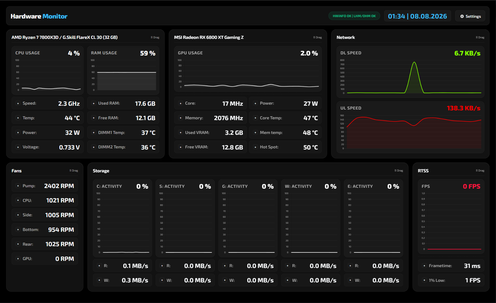
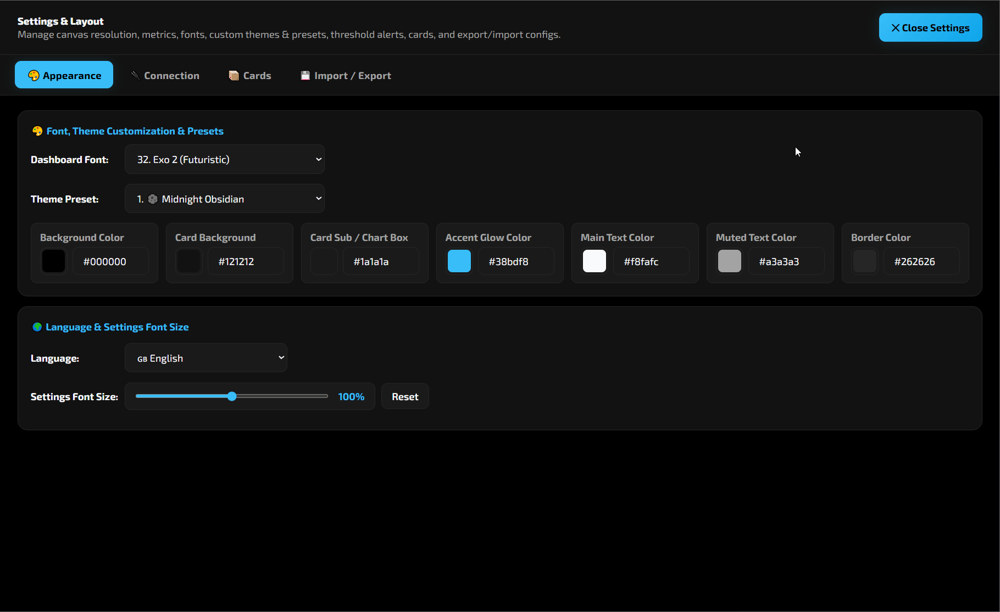

Reaaliaikainen, täysin muokattava PC-laitteiston seurantapaneeli selaimelle. HWiNFO vaatii toimiakseen remotehwinfo-serverin, minkä lisäksi tuettuna on LibreHardwareMonitor omalla web-serverillään.
Puhdas ja mukautettava käyttöliittymä sopii täydellisesti työpöydälle tai erilliselle sensorinäytölle. Klikkaa kuvia suurentaksesi ne.

Reaaliaikaiset arvot, dynaamiset kaaviot ja visuaaliset hälytykset yhdellä silmäyksellä.

Teemojen valinta, korttien järjestely, resoluution säätö sekä JSON-vienti ja tuonti.
Lukee tietoja HWiNFOsta remotehwinfo-serverin kautta sekä suoraan LibreHardwareMonitorin tai OpenHardwareMonitorin omasta web-serveristä.
Valmiita teemapohjia (kuten Cyberpunk Neon ja Midnight Obsidian), vapaat värivalinnat ja skaalaus sensorinäytöille.
Muokkaa korttien kokoja, sarakkeita ja järjestystä helposti. Varmuuskopioi tai lataa asetukset JSON-muodossa.